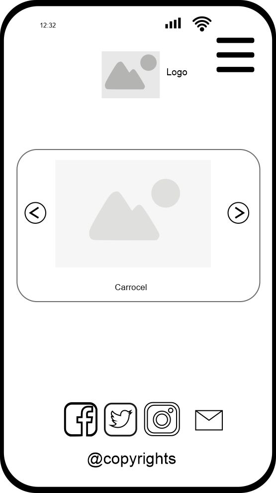
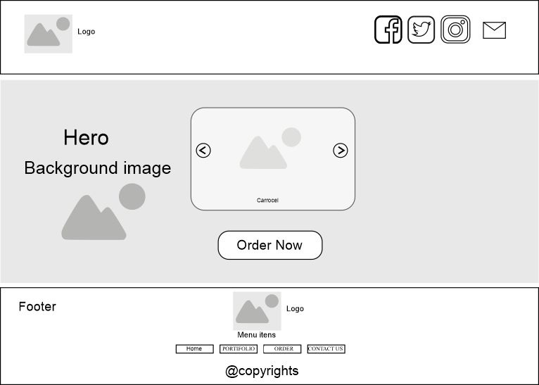

Rent Combie to the party
This name was chosen because it reflects the moment when a person is looking for something for their party, and wants to provide a situation that will remain in the memory of the people who were invited to that event, allowing each person to experience this opportunity. The name is easy to remember and fits well with Kombine and Combie, in addition to being easy to remember.
The website will provide customers with essential information about Combie rental for parties and other offers that can be added, in addition to providing contacts so that the customer feels comfortable contacting us and visiting our social networks.
Primary Font: Arial, sans-serif for body text, ensuring readability and simplicity.
Secondary Font: Poppins, serif for headings to give a classic, modern elegant feel.
A rough homepage layout will feature a main image with the Kombine name and logo at the top, followed by sections for menu highlights, location, hours of operation, and a call to action for rentals and newsletter signup.
Mobile View: The layout will stack vertically for easy navigation on small screens.
Desktop View: The layout will feature design like landing regular page.
